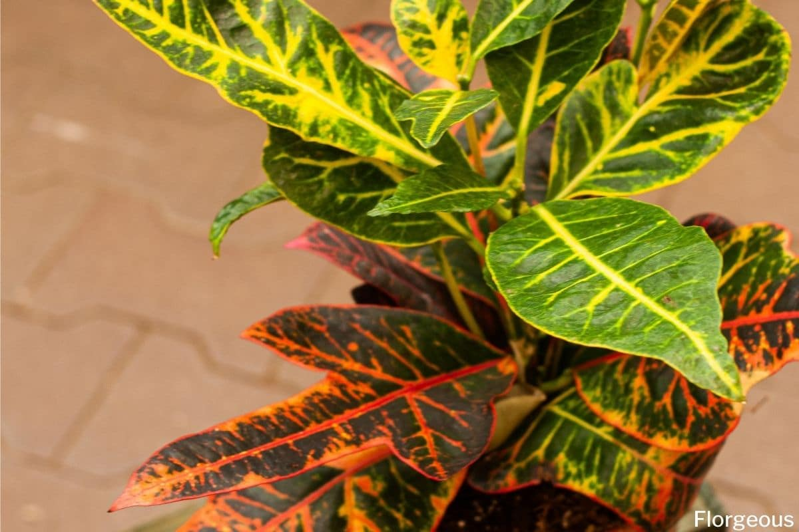

Description
If you're looking to add a splash of "living fire" to your home, the Croton is your go-to. Unlike the monochromatic greens of most houseplants, the Croton is a riot of bold yellows, deep oranges, brilliant reds, and even purples.
Native to the tropical forests of Southeast Asia and Oceania, this plant is a certified drama queen if its needs aren't met, but it rewards the attentive gardener with the most vibrant foliage in the indoor world.
Care Instructions
Light
Light is the "fuel" for a Croton’s color. To maintain those fiery hues, it needs bright, direct sunlight or very strong indirect light.
Watering
Crotons like to stay consistently moist but never soggy. They are famous for "fainting" (wilting dramatically) when they are thirsty.
Soil and Drainage
Use a high-quality, well-draining potting mix rich in organic matter. While they love moisture, sitting in stagnant water will cause root rot faster.
Temperature and Humidity
As tropical natives, Crotons hate the cold and dry air.